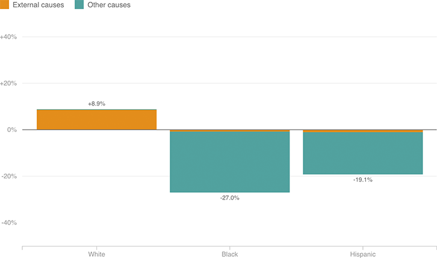

Higher Death Rates Among Middle-Aged Whites, But Not Blacks Or Hispanics
Among 45-to-54-year-old whites, mortality rates increased by 8.9 percent between 1999 and 2013. Most of the increase came from suicides, drug overdoses and alcoholism. Meanwhile, mortality rates among blacks and Hispanics in the same age group have decreased, largely due to decreases in deaths from illness and other natural causes.
Percent change in mortality rates among 45-to-54-year-olds, by race (1999 vs. 2013)
